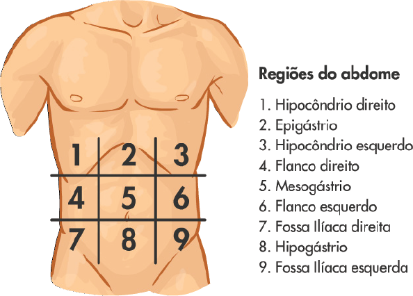

🎲 Minigame: sorteie um termo e teste-se
Clique em “Sortear termo” para receber um termo técnico aleatório. Pense no significado e, quando quiser, clique em “Mostrar significado”.
🧩 Termo sorteado
—
✅ Significado
—
🩺 Sinais e sintomas gerais
- Afasia: perda parcial ou total da capacidade de expressar ou compreender a linguagem (falada ou escrita) por lesão cerebral.
- Afebril: sem febre, apirético.
- Astenia: fraqueza, cansaço.
- Cefaléia: dor de cabeça.
- Dispnéia: falta de ar, dificuldade para respirar.
- Náusea: enjoo, vontade de vomitar, desconforto gástrico com impulsão para vomitar.
- Vertigem: tontura.
- Choque: estado de hipoperfusão tecidual (fornecimento inadequado de oxigênio/nutrientes), podendo apresentar pele fria, cianose etc.
🧴 Pele e tecido
- Alopécia: é a queda total ou parcial dos cabelos.
- Dermatite: inflamação da pele.
- Eritema: vermelhidão na pele.
- Exantema: erupção da pele.
- Equimose: pequeno derrame sanguíneo debaixo da pele.
- Pústula: elevação circunscrita da pele contendo pus.
- Quelóide: excesso de tecido conjuntivo na cicatriz, que fica exuberante.
- Atrofia: diminuição do tamanho ou peso natural de um órgão ou tecido.
- Mácula: mancha rósea na pele, sem elevação. Com elevação é Pápula.
- Flictema: vesícula, pequena bolha cheia de liquido.
💧 Edemas e líquidos corporais
- Edema: retenção ou acúmulo de líquidos no tecido celular
- Anasarca: edema generalizado.
- Ascite: edema localizado na cavidade peritonial com acúmulo de líquido.
- Exsudato: substância líquida eliminada patológicamente.
🫁 Sistema respiratório
- Apnéia: parada dos movimentos respiratórios.
- Eupnéia: respiração normal.
- Hiperpnéia: respiração anormal, acelerada, com movimentos respiratórios exagerados (aumento da ventilação alveolar).
- Anóxia: ausência total de oxigênio nos tecidos.
- Cianose: coloração azulada por falta de oxigênio.
- Expectoração: expelir secreção pulmonar"escarro".
- Expectorante: medicamento que promove a expulsão de catarro e mucosidade da traquéia e brônquios.
- Hemoptise: hemorragia de origem pulmonar,escarro com sangue.
🫀 Sistema cardiovascular e sangue
- Hemostasia: processo para conter a hemorragia, coagulação do sangue.
- Icterícia: coloração amarelada da pele e mucosa.
- Isquemia: insuficiência local de sangue.
- Precordialgia: dor na região precordial (área do coração).
🧪 Sistema urinário
- Micção: ato de urinar.
- Anúria: ausência da eliminação urinaria
- Oligúria: diminuição da quantidade de urina.
- Poliúria: aumento da quantidade de urina.
- Disúria: micção difícil e dolorosa.
- Diurese: secreção urinária.
- Glicosúria: presença de glicose na urina.
- Hematúria: presença de sangue na urina.
- Piúria: presença de pús na urina.
- Noctúria: micção frequente à noite.
🍽️ Gastrointestinal
- Constipação: retenção de fezes ou evacuações insuficientes.
- Diarréia: evacuações frequentes e líquidas.
- Pirose: azia, fermentação ácida com sensação de calor no estômago.
- Epigastralgia: dor no epigástrio.
- Êmese: ato de vomitar
- Eructação: emissão de gases estomacais pela boca,arroto.
- Melena: fezes escuras e brilhantes, com presenças de sangue, hemorragia pelo ânus em forma de borra de café, é o sangue que vem do estômago ou duodeno e sofreu transformações químicas.
- Fecaloma: constipação devido a presença de fezes secas e endurecidas.
- Hematêmese: vômito com sangue.
🤰 Gineco-obstetrícia
- Amenorréia: ausência de fluxo menstrual.
- Dismenorréia: menstruação difícil e dolorosa.
- Menarca: primeira menstruação
- Episiotomia: incisão lateral do orifício vulvar para facilitar o parto.
- Fórceps obstétrico: fórceps para aprender o feto e apressar ou facilitar o parto.
- Hiperêmese: vômito excessivo.
🧠 Neurológico e musculoesquelético
- Convulsão: contrações violentas involuntárias do músculo, agitação desordenada.
- Hemiparesia: fraqueza muscular em um lado do corpo.
- Hemiplegia: paralisia de metade do corpo.
- Miastenia: fraqueza muscular.
- Hipotonia: tonicidade muscular diminuída.
👁️ Pupilas
- Midríase: dilatação da pupila.
- Miose: contração da pupila.
- Anisocória: pupilas diferentes
- Isocórica: pupilas iguais

🧷 Outras condições e procedimentos
- Analgesia: abolição da sensibilidade á dor.
- Clister / Enema: introdução de pequena quantidade de água ou outra substância no intestino. / clister, lavagem, introdução de líquidos no reto.
- Epistaxe: hemorragia nasal.
- Esfíncter: músculo circular que constrói o orifício de um órgão.
- Estenose: estreitamento.
- Fadiga: cansaço, esgotamento.
- Fontanela: (moleira): parte não ossificada dos ossos do crânio em crianças
- Halitose: mau hálito.
- Hallux: dedo grande do pé.
- Hemocultura: cultura de sangue através de técnicas laboratoriais.
- Hidrocefalia: aumento anormal da quantidade de líquidos na cavidade craniana.
- Hipercalcemia: quantidade excessiva de cálcio no sangue.
- Hipercapnia: excesso de gás carbônico no sangue
- Hiperglicemia: excesso de glicose no sangue.
- Hiperpirexia: febre muito alta, acima de 40 graus C.
- Hipertensão: aumento da pressão arterial.
- Hipotensão: baixa pressão arterial.
- Inapetência: falta de apetite, anorexia.
- Miíase: presença de larvas de moscas no organismo.
- Necrose: morte dos tecidos localizados, de uma região do corpo.
- Pediculose: piolho
- Prurido: coceira intensa.
- Rinorréia: coriza, descarga mucosa pelo nariz.
- Sialorréia: salivação excessiva.
- Vasoconstrição: contração dos vasos com estreitamento de seu cana ou luz.
- Vasodilatação: dilatação dos vasos sanguíneos.
🗺️ Regiões do abdome
Divisão anatômica em nove regiões para localização clínica:
- Hipocôndrio direito
- Epigástrio
- Hipocôndrio esquerdo
- Flanco direito
- Mesogástrio
- Flanco esquerdo
- Fossa Ilíaca direita
- Hipogástrio
- Fossa Ilíaca esquerda
